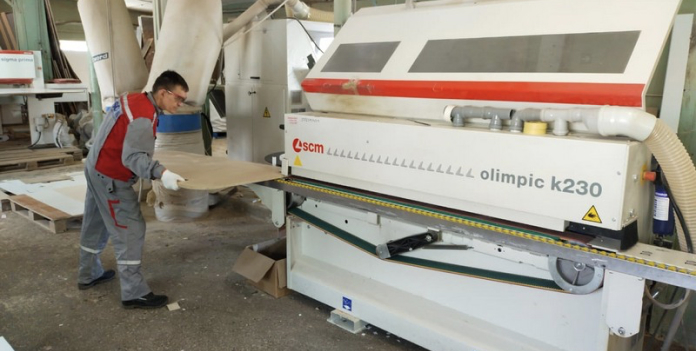
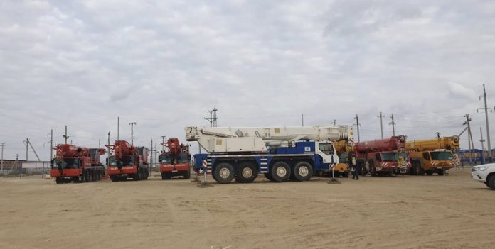
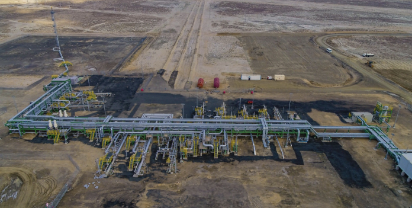
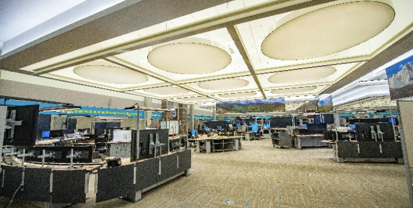
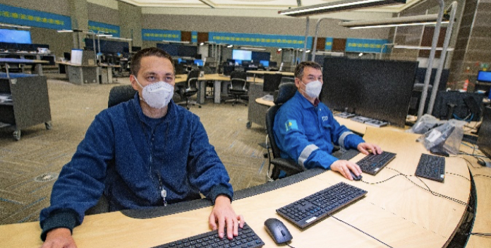

Tengizchevroil's (TCO) Future Growth Project-Wellhead Pressure Management Project (FGP-WPMP) is the next major expansion of the Tengiz oilfield. Through FGP-WPMP, TCO continues to make a major contribution to the Republic of Kazakhstan's economic progress, helping to create a legacy of a trained and skilled local workforce, technology transfer through partnerships with international companies, and upgraded infrastructure in the region.
 FGP-WPMP
FGP-WPMP
The Feedback Management Process is a quick, easy and confidential process for the community to communicate with Tengizchevroil LLP (TCO) on company operations issues and receive a timely response.
TCO is committed to building productive, collaborative and beneficial relationships with government, businesses, and local communities. Fundamental to this commitment is open dialog between TCO and the communities. TCO's Feedback Process provides a reliable way to present a concern, suggestion or grievance to the company and then receive a response.
Read moreTengizchevroil LLP, in search of the best digital product, announces a Hackathon to be held...
Future Growth Project-TCO's Wellhead Pressure Management Project is the next phase of the expansion...
Local, Kazakhstani registered companies, such as Ersai and KCOI with operations in Mangystau Oblast, proved their capabilities by manufacturing 75 large pre-assembled pipe-racks and 10 remote instrument enclosures according to international standards. The marine work scope involved the operation of more than 126 vessels, of which 40 were newly constructed vessels or significantly modified to support the project. Meanwhile, KazMorTransFlot operated module carrying vessels in the Caspian Sea. In total, the vessels travelled over 140,000 km between Kazakhstan and other international locations. One of the main legacies of the project is that a new Cargo Transportation Route (CaTRo), was specially built at Prorva near Tengiz, and included a 71 km marine access channel, cargo offloading and storage facilities and a haul road to the Tengiz field where modules are being assembled according to plan.
 Since the commencement of FGP-WPMP, TCO has spent over $13.6 billion to purchase Kazakhstani goods and services. Approximately 91 percent of the total project workforce are Kazakhstani citizens. TCO has engaged Kazakhstani entities to participate in FGP-WPMP in engineering, procurement and fabrication services, has pre-screened 2,351 Kazakhstani companies and awarded 1,250 parent contracts to almost 600 to Kazakhstani registered companies.
On November 4th, 2021, FGP-WPMP has safely achieved early oil production from a new metering station. The new metering station is the third of four metering stations, which are connected to their respective clusters of wells, as part of the oil gathering system being built for FGP-WPMP. The 3 existing metering station clusters are already producing over 13 000 tonnes per day or 100,000 barrels crude oil per day of incremental early oil production, which is aimed at keeping existing plants full, alongside improving the ultimate recovery of resources. New full-time positions for the national workforce of Kazakhstan have been created through this latest development.
 June 3, 2022, at Tengiz was launched an Integrated Operations Control Center (IOCC). This state-of-the art IOCC facility applies the latest digital technologies and is the only facility of its kind in Kazakhstan's oil and gas industry. It will integrate the management of all TCO's production plants into one control center and operating model.
The IOCC is located 20 km away from TCO's production facilities. It also includes a 2200 square meter central control room which is designed to provide Tengiz field operators with the flexibility to make better decisions, improve reliability and optimize production performance. Over 30 Kazakhstani companies and more than 600 employees, contributed to the construction and commissioning of this world class facility. By working on the commissioning of the IOCC the local workforce has also improved their knowledge and skills through comprehensive training and being part of this unique experience.
The Feedback Management Process is a quick, easy and confidential process for the community to communicate with Tengizchevroil LLP (TCO) on company operations issues and receive a timely response.
TCO is committed to building productive, collaborative and beneficial relationships with government, businesses, and local communities. Fundamental to this commitment is open dialog between TCO and the communities. TCO's Feedback Process provides a reliable way to present a concern, suggestion or grievance to the company and then receive a response.
Once you have submitted feedback, TCO will formally acknowledge the receipt within 5 working days. TCO's objective is to respond to the feedback within 20 working days.
TCO does not share feedback outside of the company. Feedback lets us respond to concerns, grievances and consider suggestions that help TCO become more responsive to our local communities.
The Process is confidential. We urge the community to provide us with your feedback, together with contact information that will allow us to respond directly to you.
TCO provides as many options as possible to make it easy to provide feedback. Community members can fill out a TCO feedback form at drop box locations in Atyrau, Kulsary and Tengiz at the following locations: